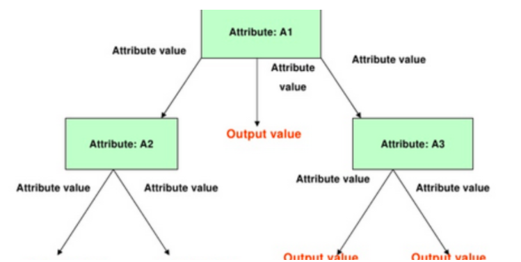

Decision tree classifier, built from scratch
Which businesses should a sales team cold-call first? I wrote a decision tree from the ground up, using Gini impurity, information gain and recursion, then compared its accuracy with scikit-learn's version on real sales data.
Pythonscikit-learnClassification